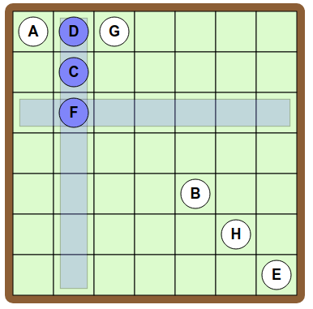
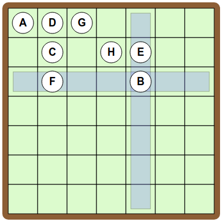

لعبة الداما
سیقوم الخط بتوصیل الدوائر، اذا كانت في نفس الصف أو العمود.
اسحب الدوائر الموجودة على الشبكة لجعل "مخططك" مطابق "للمخطط الهدف".
|
للمخطط الهدف
مخططك
|
سیقوم الخط بتوصیل الدوائر، اذا كانت في نفس الصف أو العمود.
اسحب الدوائر الموجودة على الشبكة لجعل "مخططك" مطابق "للمخطط الهدف".
|
للمخطط الهدف
مخططك
|
لتوصیل Aبـ B، قم بوضع هذه الرموز على نفس الخط.

لتوصیل B بـ C,یجب أن نضع C على نفس السطر أو على نفس العمود الذي یوجد علیه B.
لكن إذا وضعنا C على نفس سطر B, فسنحصل على خط لا نرغب به بین A و C

لذلك یجب علینا وضع C في نفس العمود الواقع علیه B. على سبیل المثال :

یتبقى علینا أن نختار موضع لـD. و حتى یتم توصیل D بـ C، وبما أن D غیر متصله بـ B و A، یجب أن نضع D على نفس السطر مع C، مع الابتعاد عن عمود A. هنا الحل :

توجد عدة حلول أخرى، وهذا أحد الحلول:

لتوصیل A و B و C یجب أن نضعهم جمیعا على نفس السطر.

بعد ذلك، لتوصیل D إلى B، بدون أن نربط D مع A أو C، یجب أن نضع D في نفس عمود B.

أخیراً، لتوصیل E إلى C و D, یجب أن نضع E في نفس عمود C وعلى نفس سطر D.

الطریقة الفعالة للحل هنا هي التركیز على "المثلثات" التي تتشكل في المخطط الهدف، حیث أن المثلث الذي یربط بین 3 رموز یشیر إلى أن هذه الرموز الثلاثة موجودة على نفس الخط أو في العمود نفسه.
لتوصیل الرموز A و D و G ثلاثتهم سویا، نضعهم نفس الخط (السطر) . وبعد ذلك، لربط D و C و F معا، نضعهم في عمود D.
لتوصیل الرموز H و E و C ثلاثتهم سویا ، نضع H و E على خط (سطر) C، مع تجنب الأعمدة المستخدمة.

أخیرا، لتوصیل B إلى E و إلى F، یجب أن نضع B على حد سواء في نفس عمود E وعلى نفس سطر F.
